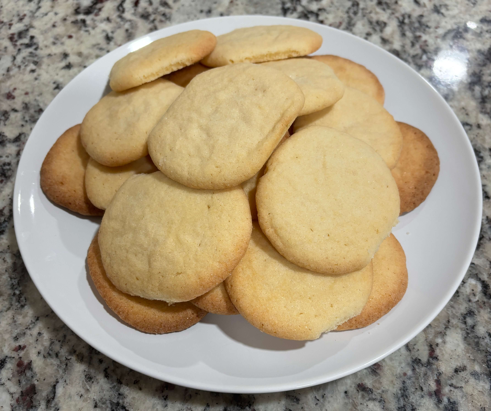

Home
Sugar Cookies

Makes 45 cookies
Prep: 20 min, Cook: 10 min, Total: 30 min
Ingredients
- 3 cups all-purpose flour, measured then sifted
- 1 1/2 teaspoons baking powder
- 1 teaspoon fine sea salt
- 3 sticks unsalted butter, softened (1 1/2 cups)
- 1 1/2 cups granulated sugar + extra for rolling
- 2 large eggs
- 1 tablespoon pure vanilla extract
Steps
- Preheat the oven to 375 degrees F. Line several baking sheets with parchment paper. Mix the flour, baking powder, and salt in a medium bowl.
- Place the softened butter and sugar in the bowl of your electric mixer. Cream the butter and sugar together on high until light and fluffy, 3-5 minutes. (Don't skimp on the time here.) Then turn the mixer on low and add the eggs and vanilla extract. Scrape the bowl.
- With the mixer running on low, slowly add the flour mixture. Scrape the bowl and beat again for 30 seconds.
- Pour some extra sugar into a bowl to coat the cookies. Scoop the dough out and roll into 1-inch balls. The dough should be soft and delicate - don't over-handle. Shake each ball in the sugar bowl to coat, then place on the cookie sheets 2 inches apart. Use the bottom of a drinking glass to press down on each ball, until it's 1/3- to 1/2-inch thick.
- Bake each sheet of sugar cookies for 9-11 minutes, until the edges are slightly golden and the centers are just barely set. Cool completely on the cookie sheets.
Tips for softer less crispy cookies
- Bake at 350 instead of 375
- Use 1 cup granulated sugar and 1/2 cup brown sugar instead of all granulated sugar
- Use 3 large eggs instead of 2
- Use slightly less flour
- Bake for 8-9 minutes instead of 9-11 minutes
- If you want them to stay soft store in an air tight container with a single slice of white bread. The cookies will absorb the moisture from the bread and stay chewier for days